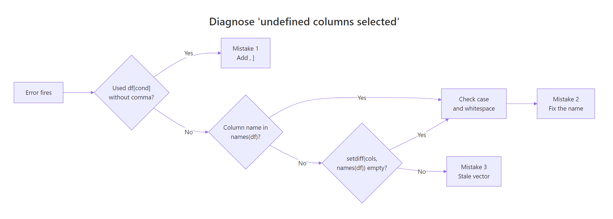

R Error: 'undefined columns selected', 3 Column-Subsetting Mistakes Fixed
Error in [.data.frame(df, , cols) : undefined columns selected means R looked for a column name you requested inside a data frame and could not find it, or the subsetting call confused a row condition with a column vector. Three small mistakes cause almost every occurrence, and each one has a fast fix.
What does 'undefined columns selected' actually mean?
The error fires whenever [ is asked to select a column that is not in names(df), or when [ receives only one argument and tries to read it as a column index. R reads every bracket call as df[rows, cols]. The moment cols resolves to a name or position that does not exist, R stops rather than guess. The fastest way to lock the pattern in is to trigger the error and watch the fix land.
The first call fails because R interprets mt$mpg > 20 as a column selector, a length-5 logical vector that does not line up with three columns. The second call uses the comma to mark it as a row filter, and R returns the matching rows cleanly. That is the core model: R always expects [rows, cols], and it treats any single-argument bracket as column selection.
[rows, cols], and a missing comma makes R read your row filter as a column vector. Every single trigger for "undefined columns selected" comes from violating that rule, either by dropping the comma, by passing a name that is not in names(df), or by passing a stale character vector that used to match but no longer does.Try it: Reproduce the error on a five-row slice of iris, then fix it so you get rows where Sepal.Length > 5. Capture the error message with tryCatch() so the notebook keeps running.
Click to reveal solution
Explanation: The first call drops the comma so R reads the logical vector as column indices. Adding , fixes it because R then parses the vector as a row filter.
Mistake #1: Why does a missing comma crash single-bracket subsetting?
The missing comma is the single most common cause, and it has a surprising explanation. When you write df[condition], R does not throw a syntax error, it tries to be helpful by treating condition as a column selector. If the logical vector's length matches the column count exactly, you get a silent wrong answer. If it does not match (the usual case), you get "undefined columns selected."
The length mismatch is the smoking gun. A length-6 logical cannot be mapped onto 3 columns, so R rejects the call. Whenever you see "undefined columns selected" on a seemingly simple filter, check the bracket for a missing comma first, it is the fastest box to tick.
filter(cars_small, mpg > 20) is unambiguous because it has no second argument to miss. If you are doing row filtering inside a long pipeline, reach for filter() rather than base [, you will never see this error from that code path again.Try it: Fix the broken call below so it returns rows where cyl == 4. The comma is missing in one specific place.
Click to reveal solution
Explanation: The comma after the row condition tells R "all columns." Without it, R reads the logical vector as column indices and throws the error.
Mistake #2: How do column name typos and case mismatches trigger it?
Column names in R are case-sensitive and whitespace-sensitive. mpg, MPG, and " mpg" are three different column names as far as [ is concerned, and two of them will trigger the error on a standard mtcars slice. This mistake is especially common right after importing a CSV with check.names = FALSE, where R preserves whatever the header actually contained.
names(mtcars) is your friend whenever the error hints at a name mismatch, print it and eyeball the spelling. For whitespace bugs, trimws(names(df)) is the one-liner that clears them. Case bugs usually come from typing Mpg or MPG out of habit; a quick grep("^mpg$", names(df), ignore.case = TRUE) confirms the column exists under a different casing.
Try it: The data frame below has a stray trailing space on the "sepal" column. Fix the names, then select the "sepal" column cleanly.
Click to reveal solution
Explanation: trimws() strips leading and trailing whitespace from every name. After cleanup, "sepal" matches and [ returns the column.
Mistake #3: Why do stale column vectors break programmatic subsetting?
The third mistake hits real pipelines hardest. You build a character vector of column names earlier in the code, maybe read it from a config file, maybe computed it from setdiff(), maybe let a user pass it in, and then use it to subset. Somewhere upstream, the data frame loses a column or picks up a typo, and the vector drifts out of sync. Base [ has no forgiving mode here: one unknown name in the vector, and the whole call throws.
setdiff(wanted, names(df)) should be your reflex move the instant this error appears in a function or pipeline. It returns exactly the names that do not exist in the data frame, so you know whether you have a typo, a dropped column, or user input that needs validation. The cost is one line; the payoff is you never squint at a long column vector trying to spot the bad one.
any_of() silently skips names that do not exist (safe for optional columns), while all_of() throws with a clear message naming the offenders. If you are already inside a tidyverse pipeline, prefer these over base [ for dynamic column selection.Try it: Diagnose which names in ex4_cols are missing from mtcars using setdiff(). Save the result to ex4_miss.
Click to reveal solution
Explanation: setdiff(A, B) returns the elements of A that are not in B. Applied to requested columns vs real column names, it pinpoints exactly which entries would trigger the error.
How do you find the missing column in ten seconds?
Once you know the three mistakes, diagnosis is mechanical. Walk the decision flow: check for a missing comma first (cheapest to verify), then compare names with setdiff(), and only then look for case or whitespace problems. The flowchart below captures that routine visually.

Figure 1: Decision flow to diagnose which of the three mistakes caused the error.
The diagnosis routine collapses into one small helper. safe_select() below checks the requested column names against the data frame before subsetting, and if any are missing it throws a clear error that names the offenders. Drop it into a utility file and use it whenever you subset programmatically.
Notice how the error now tells you exactly what went wrong. gear is fine (it exists in mtcars), but hpw is flagged with the full list of valid names for cross-reference. This transforms "undefined columns selected" from a mystery into a pointed, actionable message, and adds drop = FALSE for free so single-column selections stay as data frames.
setdiff(). That one check surfaces the bad name where the user can see the context, instead of letting R throw ten stack frames later with no hint of which column was wrong.Try it: Write a short validator ex5_check(df, cols) that returns the character vector of missing columns (or character(0) if everything is present). Test it with a column vector that has one typo.
Click to reveal solution
Explanation: setdiff() is the entire validator. Wrapping it in a named function makes it self-documenting and easy to reuse at every boundary in your codebase.
Practice Exercises
Exercise 1: Pre-flight check a brittle function
Given a function summary_cols() that takes a data frame and a character vector of columns and returns their means, add a pre-flight check so it throws a clear error naming any missing columns instead of the cryptic "undefined columns selected." Your fix should not change the happy path.
Click to reveal solution
Explanation: The setdiff() check runs before [, so a bad name is caught at the function boundary with an informative message. The happy path is unchanged, [ runs only when all names are valid.
Exercise 2: Classify which mistake caused the error
Write diagnose_undef(df, cols_expr) that runs a subsetting expression with tryCatch(), and if it errors with "undefined columns selected," returns a short string naming which mistake was the cause: "missing_comma", "name_mismatch", or "ok". Use heuristics: if the two-argument df[, cols_expr] call succeeds and cols_expr is a logical vector of length nrow(df), the real intent was a row filter and the cause was a missing comma.
Click to reveal solution
Explanation: The two-argument form df[, cols_expr] succeeds only when cols_expr is a valid column selector. When the call succeeds and the expression is a logical vector of length nrow(df), the real intent was a row filter, so the diagnosis is "missing_comma." Otherwise the call failed and the cause is a name mismatch.
Complete Example: Debug a real CSV pipeline
Here is the situation this error shows up in most often: a messy CSV arrives from upstream, you pass the column names to a reporting function, and everything explodes. Below is the full debug-and-fix loop in one place.
Two root causes layered on top of each other, mangled headers from the CSV and a typo in the user vector, are a realistic real-world combination. Cleaning names plus setdiff() untangle them in two lines, and safe_select() makes the final subset both safe and informative if another typo shows up tomorrow.
Summary
| Mistake | Symptom | Fast fix |
|---|---|---|
| #1 Missing comma | df[cond] treats cond as column vector |
Add , → df[cond, ], or use dplyr::filter() |
| #2 Typo or case mismatch | Column name does not match names(df) exactly |
Print names(df), check case, run trimws() on headers |
| #3 Stale column vector | Character vector contains a name not in the current data | Run setdiff(cols, names(df)) to pinpoint the bad name |
| Prevention | Any of the above, buried deep in a pipeline | Wrap subsetting with safe_select() and fail at the boundary |
References
- R Documentation,
[.data.framemethod reference. Link - Wickham, H., Advanced R, 2nd Edition. Chapter 4: Subsetting. Link
- tidyselect documentation,
any_of()andall_of()reference. Link - dplyr documentation,
filter()reference. Link - janitor package,
clean_names()function reference. Link - Statistics Globe, "Undefined Columns Selected When Subsetting Data Frame in R." Link
- Statology, "How to Handle 'undefined columns selected' in R." Link
Continue Learning
- 50 R Errors Decoded, the master list of R's most common error messages with plain-English explanations and exact fixes.
- R Subsetting, the definitive rule for when to reach for
[,[[,$, and@in base R, with every trade-off laid out. - R Error: 'object not found', the companion guide covering the other most-hit lookup error and its seven root causes.